From suar to chuzi.
This is how much I love you.

In your smile, I found my peace.
In your love, I found my home.
tap to open
For you, my baby.
(tap to open)
This is how much I love you.
In your smile, I found my peace.
In your love, I found my home.
tap to open
✓ Unlocked
From, your forever
Enter Passkey
wrong passkey, try again


Loading